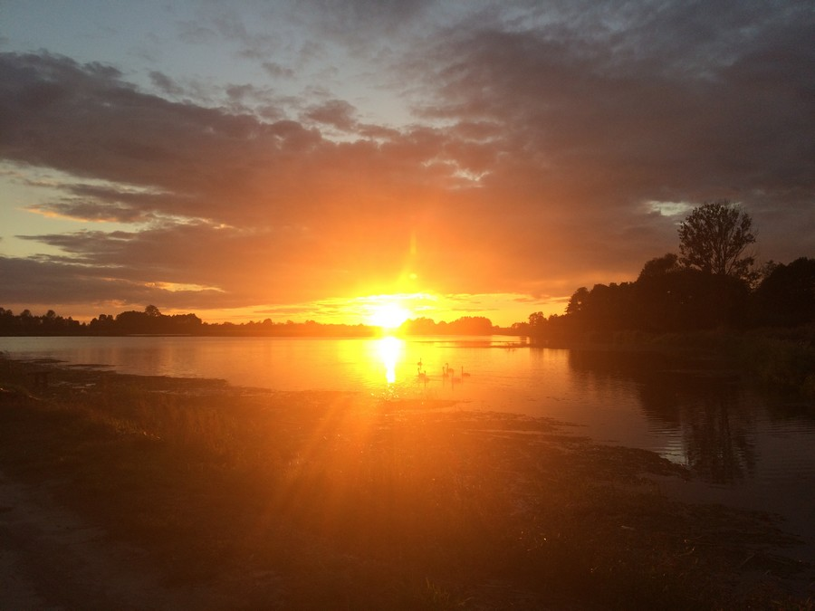
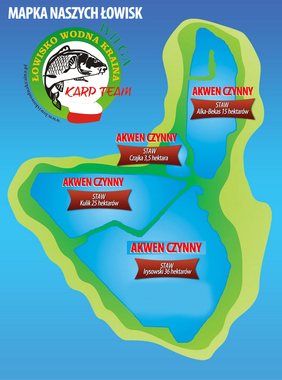
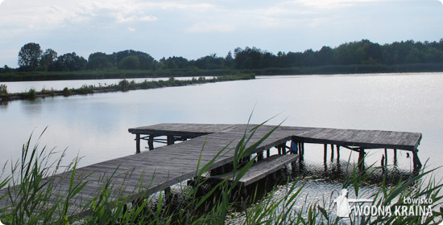

Witamy · Wilga, ul. Stawowa 9
ŁowiskoWodna Kraina
Dla miłośników wędkarstwa stworzyliśmy szereg łowisk obfitujące w różnorodne gatunki ryb.

W związku z nowymi opłatami od dzisiejszego dnia na łowisku wodna kraina wprowadzamy opłatę za śmieci worek 120 l - 20 zł. Zachęcamy do wywożenia swoich śmieci z terenu łowiska, wówczas opłaty nie będą naliczane. Za utrudnienia PRZEPRASZAMY.
Wędkarstwo w Wildze
Cały nasz obiekt to powierzchni 150 h, z czego większość to jeziora, stawy, lasy, położone w malowniczej, turystycznej miejscowości podwarszawskiej Wildze.
Przez ponad 25 lat w chronionych stawach, bez żadnej ingerencji ze strony człowieka wytworzyły się populacje dużych osobników. Dominują karpie o wielkości od 5kg do 25 kg, amury od 8kg do 20 kg i szczupaki od 5 kg do 20 kg.
Zapraszamy głównie wędkarzy, miłośników ciszy, obcowania z przyrodą i wędkarstwa sportowego, dla których zasada to „Złów i Wypuść” – znajdziecie u nas dużą rybę i wymarzony odpoczynek. Kierujemy się zasadą bezwzględnego zakazu zabijania i zabierania ryb.
Łowiska są czynne od świtu do zmierzchu, dla karpiarzy całą dobę. Głębokość łowiska od 1,5 metra do 3 metrów.
Zapraszamy również do organizacji zawodów i mistrzostw wędkarskich na terenie naszego łowiska.

Mapa Stanowisk
kliknij i wybierz stanowisko
→
Godziny otwarcia
- Poniedziałek - Piątek
- 08:00 - 21:00
- Sobota
- 08:00 - 21:00
- Niedziela
- 08:00 - 21:00
- Dla Karpiarzy 24h
Dojazd
Wyświetl większą mapę →Nasi Partnerzy